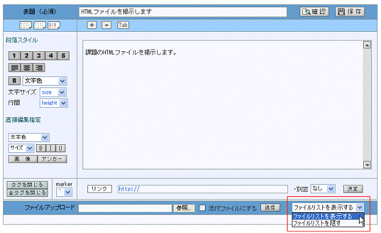
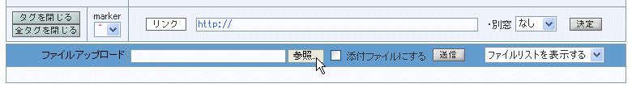
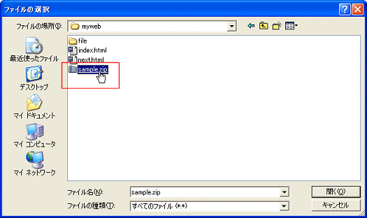
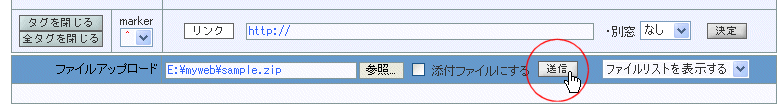
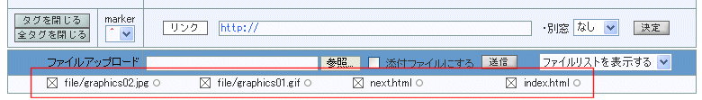
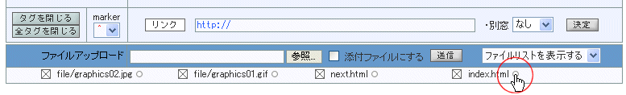
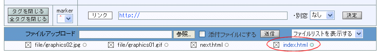

|
 zipファイルをアップロードする zipファイルをアップロードする
(1) PMLエディタを開き、右下にあるリストボックスで「ファイルリストを表示する」を選択しておく

(2) 下段のファイルアップローダーの参照をクリックして、ファイルを選択する

(3) ダイアログボックスが開くので、送信したいZIPファイルを選択する

(4)ファイルアップローダーにファイル名が表示されたことを確認し、送信ボタンをクリックする

(5) 送信が完了すると、ZIPファイルが解凍されて、中のファイル名が表示される。
ファイル名の右側に付いている○印は添付ファイルではないことを示す灰色になっている。

 起点となるhtmlファイルを添付ファイルにする 起点となるhtmlファイルを添付ファイルにする
(1) index.htlmなど、起点となるHTMLファイルを添付ファイルにする。
送信ファイルを後から添付ファイルに変更するには、ファイル名の右の○印をクリックする。
これは、一般ファイルと添付ファイルを交互に切り替えるスイッチで、添付ファイルは青○となる。

(2) ファイル名と○印が青くなり、添付ファイルとなったことを確認する

(3) 確認ボタンをクリックしてプレビューを見る
プレビューでは、添付ファイルのピンアイコンが示されているので、これをクリックし、
HTMLが表示されることを確かめる、

|
|